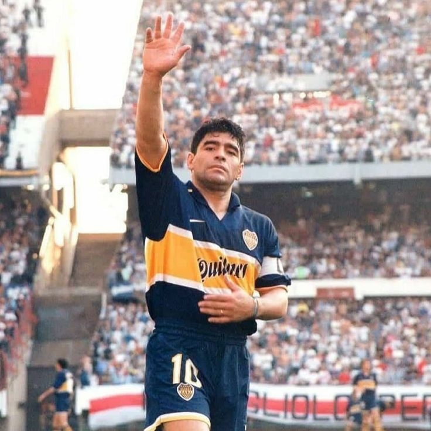
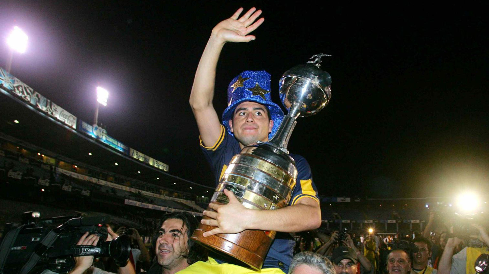

Diego Armando Maradona

Juan Roman Riquelme
Bienvenidos a este sitio web, pensado para todos aquellos que siguen la misma pasion que nosotros.
Somos un grupo de fans y aficionados del club mas grande de Argentina, que busca reunir la mayor cantidad de hinchas para formar parte de esta maravillosa comunidad. Hace mas de 5 años que ideamos este proyecto y continuamos con mucho entusiasmo. Vos tambien podes ser parte de nuestra comunidad, ingresa a nuestra pagina y mira todo nuestro trabajo.
Diego Armando Maradona
Juan Roman Riquelme